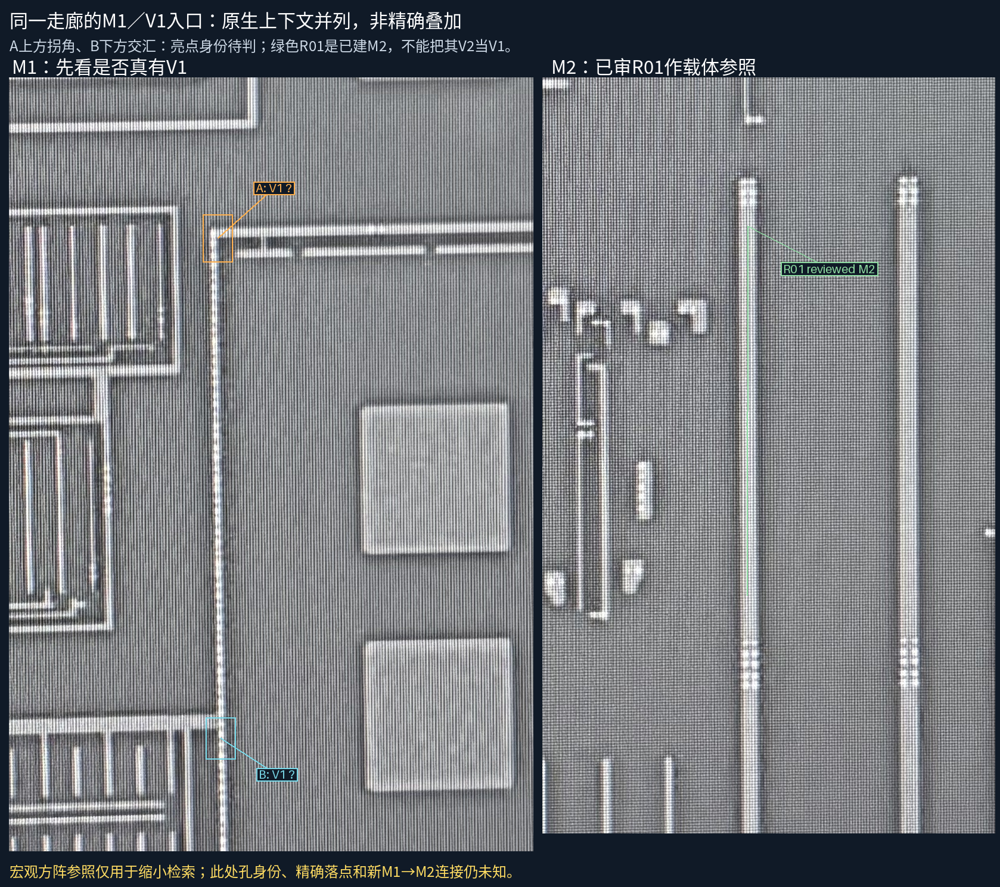
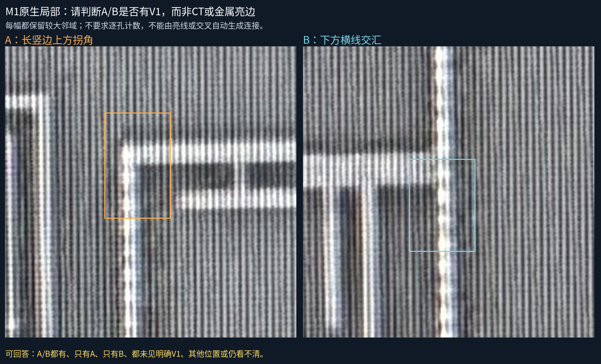
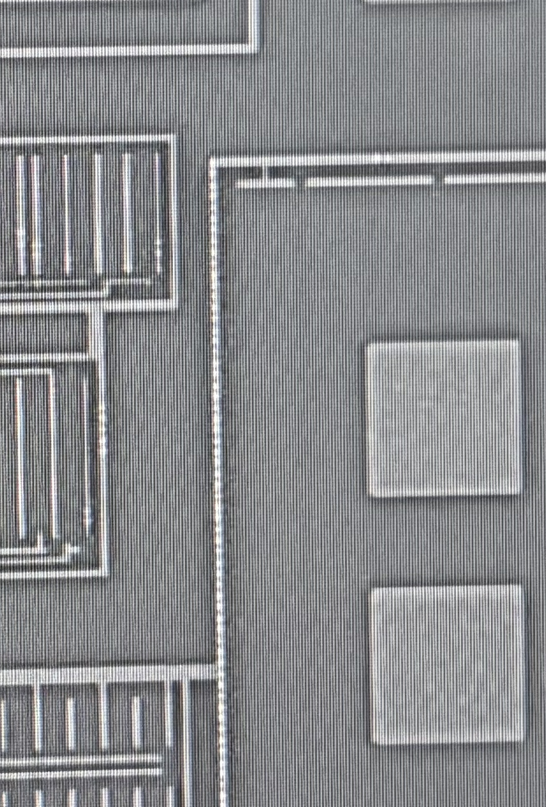

宏观方阵参照已缩小R01检索位置，但没有通过内部结构证明细孔精度。A/B的亮边可能包含CT、V1或拍屏纹理，当前不认定有V1、不绘制连接。原9条已审承载保持。


M1图A上方拐角、B下方交汇中，哪些位置有V1并接到M2图R01？可答A/B都有、只有A、只有B、都未见明确V1、其他位置或看不清。若只确认宏观位置，请明确；位置对应不会被登记为V1批准。无需数孔，不重复原9接口。

第一次方阵内部ORB匹配在独立保留区P95约129px，已拒绝。外边界方法首版因FBL测量触边被拒绝；按源图修正同一边界的种子后，保持35px测量带和20/50px宏观预算，两个独立方阵保留点约2.5px内。原失败、种子修订和全部点保留。
这些参照都在外围方阵，没有内部细孔保留检查，不能用2.5px声称V1精度或全图配准。参照只用于寻找M1原图邻域；本页没有M2投影叠到M1，没有把V2当V1或用同孔拟合。
现有模型仍30金属、9已审承载、42设计候选孔。孔数、真实工艺、完整网络未知，README/site/gh-pages保持。